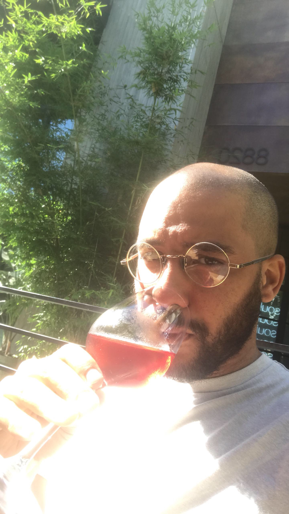

About Me
My name is Zachary Sadovszky. I'm a native Richmonder, I grew up in the West End and moved to the city when I was 18.
Upon my arrival into the adult world I was at a stalemate with what I wanted to do. I did the college thing for a little while and ultimately ended up working full time selling suits.
I found that job unfulfilling and wanted to change my course. I started teaching at a school for individuals on the Autism Spectrum. This job was rewarding, but the level of stress proved to be too much.
I transitioned to teaching neuro-typical children. I taughet pre-school, after-school, and after working a summer camp I realized that wasn't the field for me.
My best friend taught himself to code and got great job after great job with this skill. I saw an oppurtunity to make a career change and ultimately put me in the place I wanted to be financially.
I downloaded a few apps and with the help of my friend dipped my toes into the water, and found out it wasn't very cold. I really enjoyed the puzzles and solutions I was able to come up with.
With this new found hobby I decided to take a dive into the water and join the University of Richmond's Full Stack Bootcamp.
When I'm not in class or at work I love to skateboard with my friends and play music.